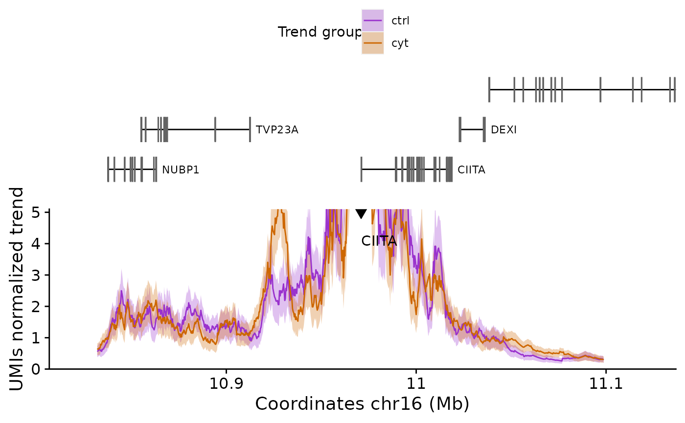

Produce a UMI-4C data plot containing the genes in the region, the adaptative smoothen trend and the domainogram.
plotUMI4C( umi4c, dgram_function = "quotient", dgram_plot = TRUE, colors = NULL, xlim = NULL, ylim = NULL, TxDb = TxDb.Hsapiens.UCSC.hg19.knownGene::TxDb.Hsapiens.UCSC.hg19.knownGene, longest = TRUE, rel_heights = c(0.25, 0.4, 0.12, 0.23), font_size = 14 )
| umi4c | |
|---|---|
| dgram_function | Function used for calculating the fold-change in the domainogram plot, either "difference" or "quotient". Default: "quotient". |
| dgram_plot | Logical indicating whether to plot the domainogram. If the UMI4C object only contains one sample will be automatically set to FALSE. Default: TRUE. |
| colors | Named vector of colors to use for plotting for each group. |
| xlim | Limits for the plot x axis (genomic coordinates). |
| ylim | Limits of the trend y axis. |
| TxDb | TxDb object to use for drawing the genomic annotation. |
| longest | Logical indicating whether to plot only the longest transcripts for each gene in the gene annotation plot. |
| rel_heights | Numeric vector of length 3 or 4 (if differential plot) indicating the relative heights of each part of the UMI4C plot. |
| font_size | Base font size to use for the UMI4C plot. Default: 14. |
Produces a summary plot with all the information contained in the UMI4C opject.
